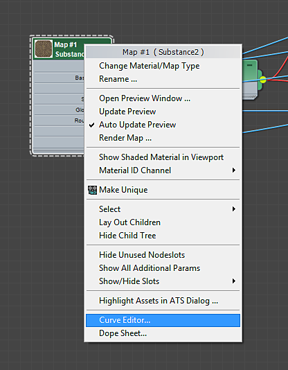
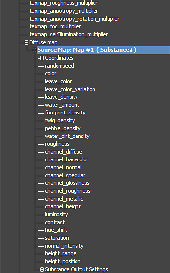

Right-click on the Substance2 node and choose "Curve Editor."'
Animating a Substance material
You can animate Substance textures using the Curve Editor in 3ds Max.
-

-
Click the + sign on the corresponding material to reveal all of the channels. The Substance parameters can be found under the maps listed for the material. Changing a parameter will propagate to all of the Substance texture regardless of which texture map you choose when selecting the Substance parameter to animate.
-
Scroll down to where you see the Diffuse Map and click the + to reveal Source Map parameters. Here you will see all of the parameters from the Substance file.

-
Click on the parameter you want to animate and then click the ‘Add/Remove Key’ button on the toolbar. Click on the line in the Curve Editor to place keyframes.